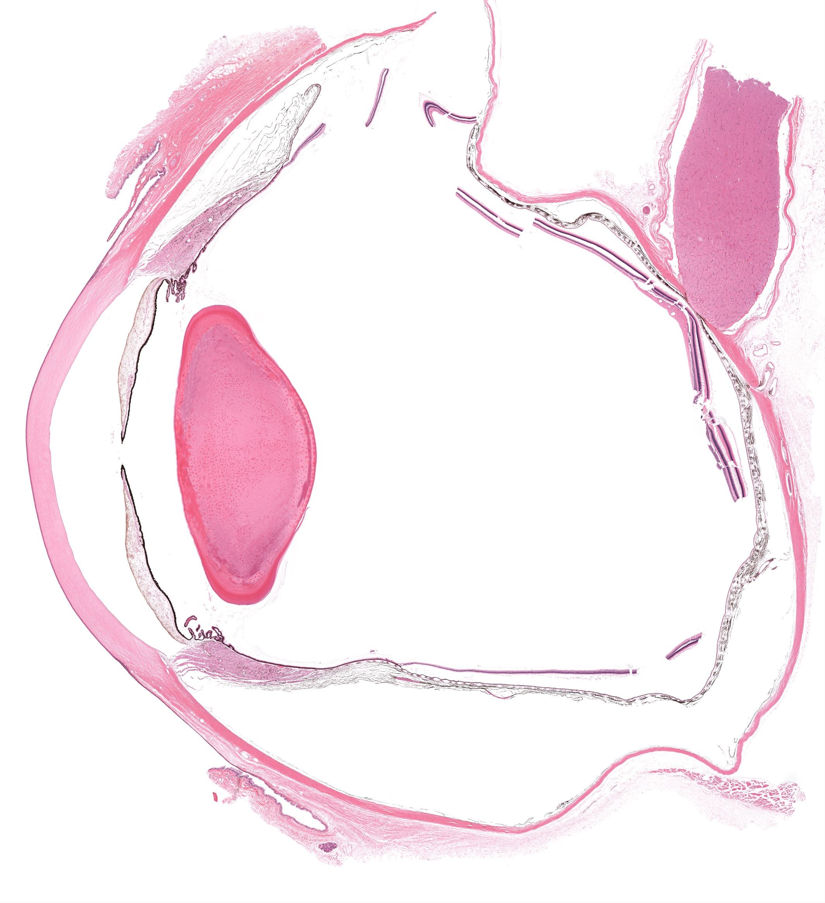
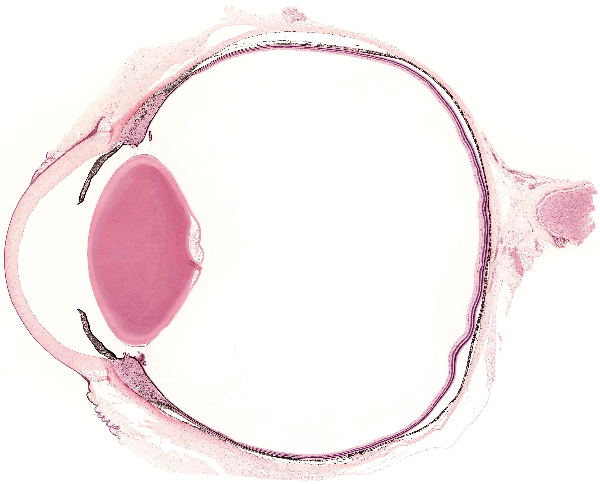
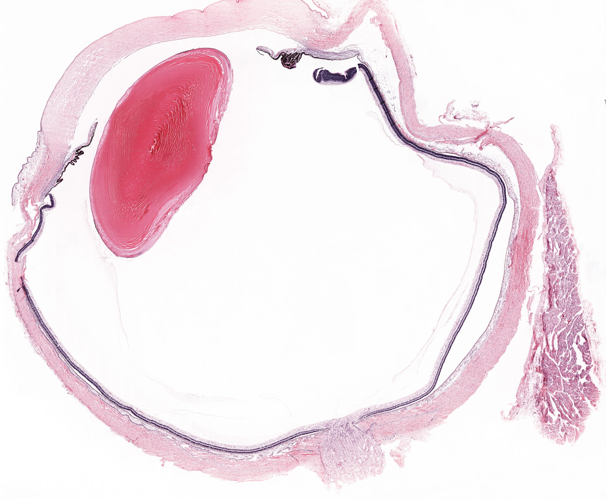
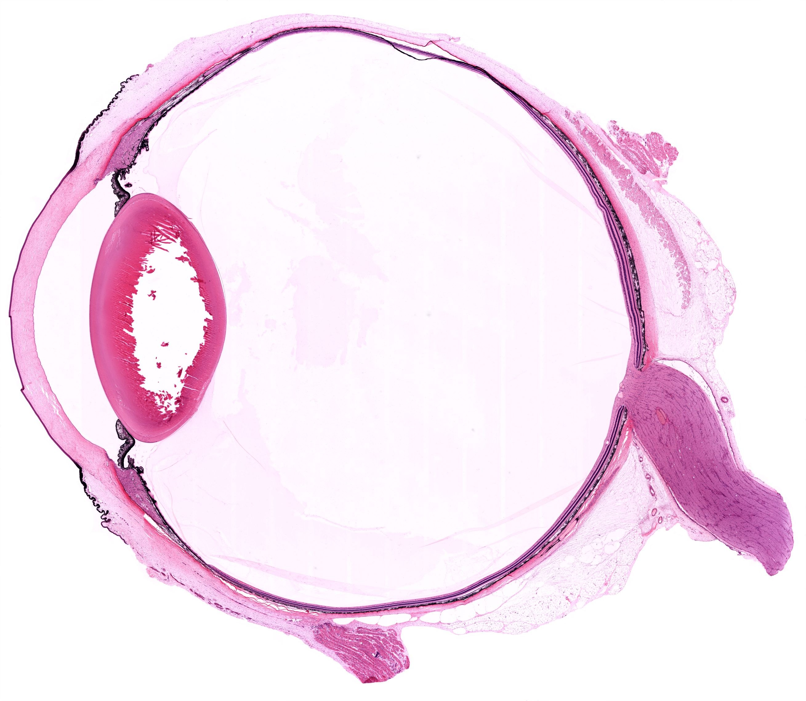
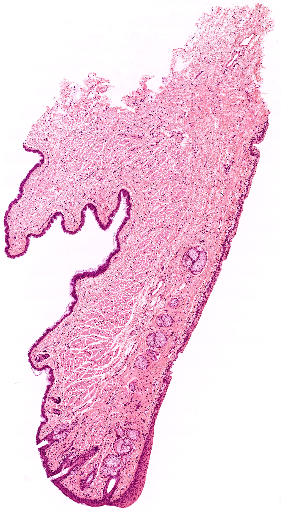
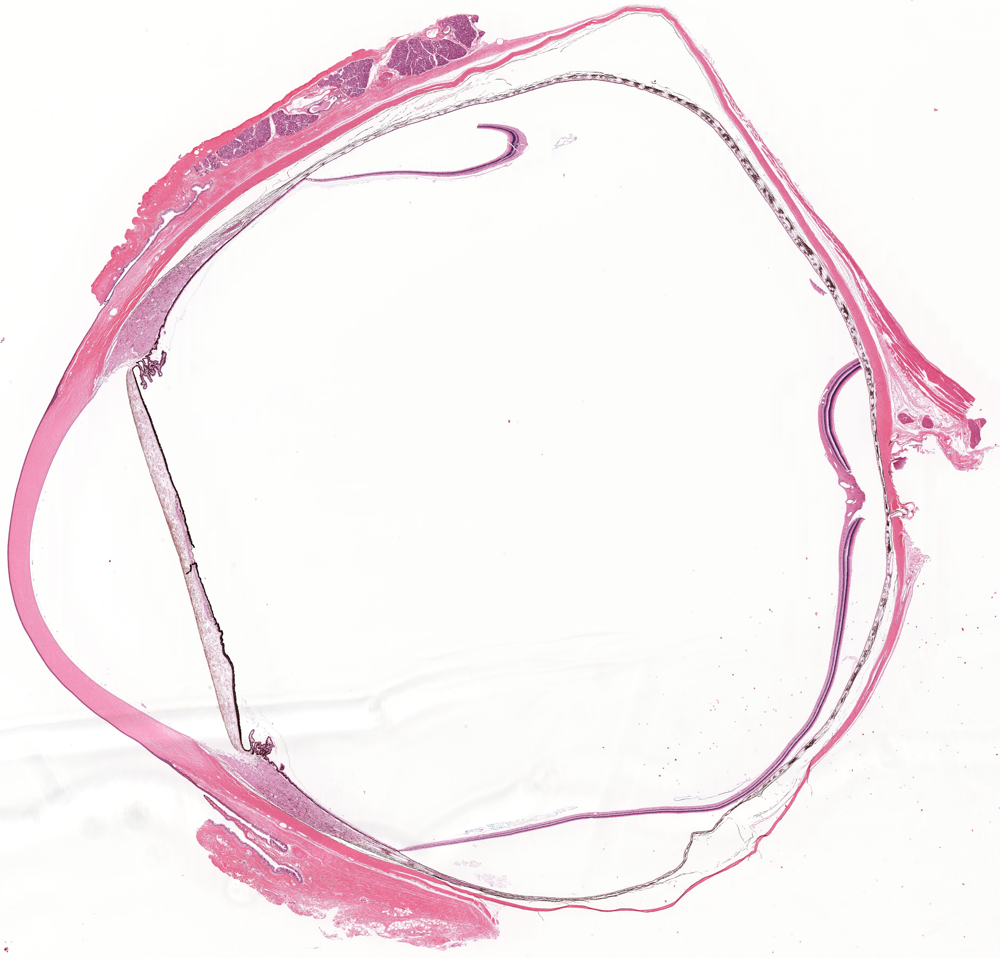
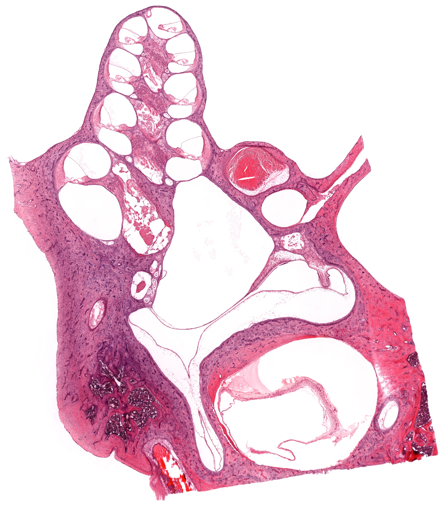

Chapter 20 · 器官系统
感觉器官
Organs of Special Sense · 3 小节 · 7 张切片 · 0 张电镜 · 本地概览 7 张
本章导语
感觉器官把光与声等物理刺激转换为神经冲动。本章以眼球壁三层结构为骨架，重点学习角膜五层、视网膜十层与视神经盘的组织学特征；再借眼睑认识睑板腺与结膜上皮的差别；最后进入内耳，观察骨迷路与膜迷路内位觉、听觉感受器的位置关系，并比较各类感受器细胞的共同规律。
复习重点
- 眼球壁由纤维膜、血管膜与视网膜三层构成
- 角膜自外向内分五层，无血管，营养来自房水与泪液
- 视网膜自外向内分十层，色素上皮层紧贴脉络膜
- 视神经盘处无感光细胞，中央凹视锥细胞最密集
- 眼睑由皮肤到睑结膜共五层，睑板内为睑板腺
- 内耳蜗管内有螺旋器，位觉感受器为壶腹嵴与位觉斑
易混淆对比
- 角膜基质层 vs 巩膜：纤维排列是否规则与有无血管：角膜基质层纤维排列高度规则且无血管，巩膜纤维交织
- 睑结膜 vs 球结膜：上皮类型与杯状细胞：睑结膜为复层柱状并有杯状细胞，球结膜为复层扁平
- 视神经盘 vs 中央凹：有无感光细胞与神经纤维层厚度：视神经盘无感光细胞，中央凹处视网膜各层变薄
待核验译名：Organs of Special Sense 中 special sense 多译特殊感觉，本章按国内教材习惯作感觉器官；Eyelid and Conjunctiva 的中译按内容合并为眼睑与结膜
阅读提示：本页中文要点为自编复习笔记，不是原站正文的翻译；标本图像为经作者书面许可保存的中分辨率概览，每张卡片保留 © 署名与原页面链接，“原站本章/原站切片”可查看高倍与结构标注。本站为 Histology Guide 的非官方中文学习改编版，未经其认可或背书。
眼球
Eye
- 眼球壁由纤维膜、血管膜与视网膜三层构成，眼腔内含房水、晶状体与玻璃体。
- 角膜自外向内分上皮、前界层、基质层、后界层与内皮五层，其中无血管。
- 巩膜为致密结缔组织，与角膜交界处有巩膜静脉窦与小梁网。
- 视网膜自外向内分十层，视锥与视杆细胞的外节构成视杆视锥层。
- 视神经盘处无感光细胞，为生理盲点；中央凹处视锥细胞最密集。
低倍镜低倍镜先确认角膜与巩膜的移行处，再定位虹膜、睫状体与脉络膜。
高倍镜高倍镜逐层辨认角膜五层与视网膜各层，注意色素上皮层位置。
易混提示：视网膜色素上皮层紧贴脉络膜，取材时易与脉络膜一并剥脱而缺失。
相关标本 · 4

点击图片放大 · 本地概览
MHS 227a Eye
眼球（前部与角膜）
H&E
本地概览
2130×2330
图像 © Histology Guide 及/或原始贡献者 · 非商业教育用途，经许可保存；原页面链接见下方

点击图片放大 · 本地概览
MHS 229 Eye
眼球（后部与视网膜）
H&E
本地概览
3972×3204
图像 © Histology Guide 及/或原始贡献者 · 非商业教育用途，经许可保存；原页面链接见下方

点击图片放大 · 本地概览
MHS 226 Eye
眼球与视神经
Optic Nerve
H&E
本地概览
3233×2660
图像 © Histology Guide 及/或原始贡献者 · 非商业教育用途，经许可保存；原页面链接见下方

点击图片放大 · 本地概览
MHS 302 Eye
眼球（巩膜与脉络膜）
H&E
本地概览
2618×2279
图像 © Histology Guide 及/或原始贡献者 · 非商业教育用途，经许可保存；原页面链接见下方
眼睑与结膜
Eyelid and Conjunctiva
- 眼睑自前向后分皮肤、皮下组织、肌层、睑板与睑结膜五层。
- 眼睑皮肤薄而疏松，睑缘处有睫毛毛囊及其相连的皮脂腺。
- 睑板为致密结缔组织，内含长条状的睑板腺，其导管开口于睑缘。
- 睑结膜上皮为复层柱状，含杯状细胞；球结膜上皮为复层扁平上皮。
- 眼睑肌层为骨骼肌，包括眼轮匝肌与上睑提肌。
低倍镜低倍镜按皮肤、肌层与睑板的顺序确认眼睑的层次。
高倍镜高倍镜观察睑板腺的泡状结构与结膜上皮内的杯状细胞。
易混提示：睑板腺属皮脂腺，腺泡大而染色浅，勿与睫毛毛囊旁的小皮脂腺混淆。
相关标本 · 2

点击图片放大 · 本地概览
MHS 231 Eyelid
眼睑（睑板腺）
H&E
本地概览
2976×5423
图像 © Histology Guide 及/或原始贡献者 · 非商业教育用途，经许可保存；原页面链接见下方

点击图片放大 · 本地概览
MHS 227b Eye
眼睑与结膜（睑结膜）
H&E
本地概览
4669×4474
图像 © Histology Guide 及/或原始贡献者 · 非商业教育用途，经许可保存；原页面链接见下方
内耳
Ear
- 内耳由骨迷路与套入其中的膜迷路构成，两者之间充满外淋巴。
- 膜迷路内充满内淋巴，包括蜗管、球囊、椭圆囊与三个半规管。
- 蜗管内有螺旋器，由内、外毛细胞、支持细胞与盖膜构成。
- 壶腹嵴与位觉斑为位觉感受器，表面分别覆以终帽与耳石膜。
- 骨迷路壁为致密骨组织，切片中可辨认骨单位与骨陷窝。
低倍镜低倍镜寻找蜗轴与蜗管的螺旋走行，判断耳蜗切面方位。
高倍镜高倍镜辨认蜗管三个壁及螺旋器内的内、外毛细胞。
易混提示：蜗管前庭膜菲薄、血管纹位于外侧壁，两者位置不可颠倒。
相关标本 · 1

点击图片放大 · 本地概览
MHS 230 Inner Ear
内耳（耳蜗与壶腹）
H&E
本地概览
3845×4376
图像 © Histology Guide 及/或原始贡献者 · 非商业教育用途，经许可保存；原页面链接见下方
自测
9 题 · 自编
先自己回答，再点“显示答案”。标记为易错的项目会进入复习模式。
眼球壁由哪三层构成？
概念
纤维膜、血管膜和视网膜，分别对应巩膜与角膜、虹膜睫状体与脉络膜、视网膜。
角膜自外向内分为哪五层？
概念
上皮、前界层、基质层、后界层与内皮，其中基质层最厚。
角膜为何能保持透明？
概念
基质层胶原纤维排列高度规则、含水量恒定，且角膜无血管、无色素细胞。
视网膜色素上皮层位于何处？
识别
紧贴脉络膜，是视网膜最外层，与视细胞外节关系密切。
视神经盘为何被称为生理盲点？
概念
该处只有神经纤维而无感光细胞，故不能感受光刺激。
眼睑自前向后的五层是什么？
识别
皮肤、皮下组织、肌层、睑板和睑结膜。
睑板腺属于哪类腺体？其导管开口在哪里？
概念
属皮脂腺，为分支泡状腺，导管开口于睑缘。
内耳中听觉与位觉感受器分别位于何处？
识别
听觉感受器为蜗管内的螺旋器，位觉感受器为壶腹嵴与位觉斑。
壶腹嵴与位觉斑表面各覆盖什么结构？
识别
壶腹嵴表面覆以终帽，位觉斑表面覆以耳石膜。